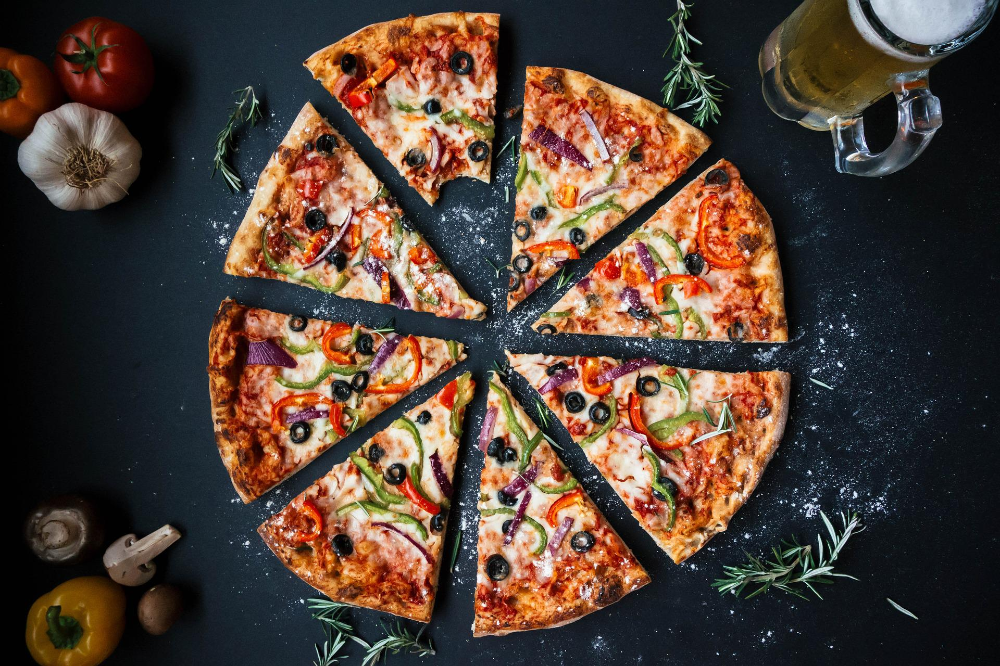

Pizza

Pizza
Pizza is one of the most amazing and popular foods in existence. It is made with
simple ingredients, yet transforms them into incredible flavors due to how it has been perfected over time.
In order to help you prepare this amazing recipe,
we have prepared a list of ingredients followed by the steps you should follow:
Ingredients:
- 4 1/2 cups of bread flour;
- 1 1/2 tablespoons granulated sugar;
- 3 teaspoons sea salt;
- 2 teaspoons instant yeast;
- 1 1/2 cups lukewarm water;
- 3 tablespoons olive oil;
- Sauce of your choosing;
- Mozzarella.
Next, the steps required to prepare this dish:
- In a bowl of an electric mixer, add the flour, sugar, salt and yeast;
- In a separate jug add the warm water and oil;
- Turn the machine on to medium speed and add the wet ingredients into the dry.
Just add enough liquid for the dough to form a ball.
- When the dough is ready, divide the dough into three balls and place each in
ble lid. Pa container with a sealalace in refrigerator and
allow to rise at
least one day, and up to 4 days. The dough can also be frozen at this stage.
- At least two hours before baking, remove dough from the refrigerator and allow it to sit at room temperature to take the chill off it.
- Preheat the oven to 500°F (250°C) and place in a pizza stone or tray if using.
Turn a dough ball out onto a lightly floured surface.
Gently stretch the dough by draping over your knuckles into a 12-14 inch circle about 1/4-inch thick.
Slide the pizza base onto a flat baking tray lined with parchment.
- Spread pizza sauce evenly over the surface of the crust, almost to the edge.
Sprinkle cheese over sauce followed by any of your favorite pizza toppings.
- Slide pizza onto baking stone and bake for roughly 12 - 15 minutes or until bubbly and golden brown.
Transfer to cutting board, slice, and serve immediately.
Return to main page